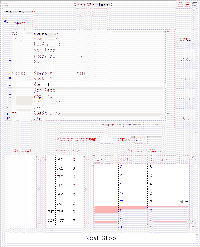

Next: Apoo Tutor Up: How to use Previous: Manipulation of activation records
This module is launched by the apoo command.
The Apoo Interface is an environment to monitoring the execution of a Virtual Processor Unit.
|  |
During the execution of a program, it shows the contents of the program counter, register, memory data and output window. The program in memory is displayed in an Assembly language (not in a machine language). As is usual with processor units emulators, Apoo has two memory segments: the program-segment and the data-segment. In this way, both addresses for program instructions and data will begin in 0.
It has two modes:
To execute a program in the Apoo Virtual Processor Unit you must first or:
After that, you can Load it; if a "parsing error" occurs, enter edit mode and correct it; the interface will show the text line in which the error occurred.
When the program is loaded (in memory) you can execute it in three ways:
In an instruction line, you can set/clear a breakpoint:
The button labelled Clear can be used to clear all breakpoints
In edit mode you can change the text code of a program or create a new one. To enter Edit Mode press the Edit button or New button. After editing you can Save or SaveAs the current edited text. You leave Edit Mode by loading the program (Load button) or opening a new file.
The following Emacs-like commands are implemented:
| <Control-k> | kill-line |
| <Control-y> | yank |
| <Control-w> | kill-region |
| <Escape>w(or <Alt-Space>) | copy-region-as-kill |
| <Control-at>(or <Control-Space>) | set-mark-command |
| <Control-a> | beginning-of-line |
| <Control-e> | end-of-line |
| <Control-Home> | beginning-of-buffer |
| <Control-End> | end-of-buffer |
| <Control-d> | deletes the character to the right of the insertion cursor. |
Until version 1.4, apoo interface was based in TkInter. Newer versions are based in pygtk, and are being developed by Ricardo Cruz. For the new versions we also thanks the comments of several students from DCC, specially Norberto Lopes and Hugo Serrano.
Rogério Reis,Nelma Moreira 2008-01-22
{kind=link}